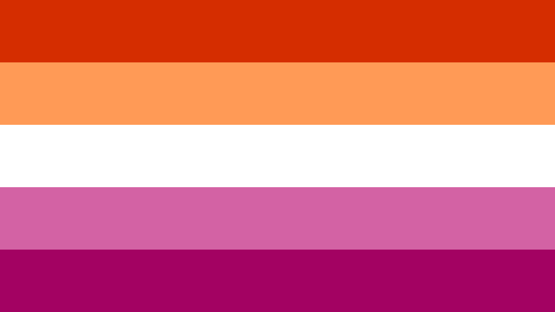

¿Qué es el lesbianismo?
Lesbianismo es el término empleado en español para hacer referencia a la homosexualidad femenina, es decir, las mujeres que experimentan amor romántico o atracción sexual por otras mujeres. La palabra lesbiana procede de la isla de Lesbos, en Grecia. Se utiliza para hacer referencia a una mujer homosexual que siente atracción sexual, física, emocional y sentimental únicamente hacia las mujeres.
(Haz click en la imagen para obtener más información)
